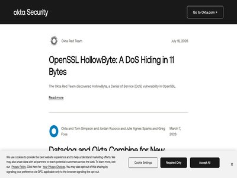

August 04, 2026 · 64 articles

Why AI coding makes zero trust an AppSec requirement
August 04, 2026
Traditional SBOMs, signing, and provenance all have blind spots, making them no longer capable of assuring software security. (ReversingLabs Blog)

Securing Agentic AI Workflows in n8n: From Leaked API Keys to Encryption Key Compromise
August 04, 2026
A leaked n8n API key is only the start. GitGuardian's research traces the full chain, from exposed tokens and weak keys to CVE-2026-25053 and the N8N_ENCRYPTION_KEY that protect... (GitGuardian Blog)

Weaponized Email AI Assistants Could Help Attackers Hijack Accounts
August 04, 2026
Researchers demonstrate how attackers could abuse built-in email chatbots to evade detection, impersonate trusted employees, compromise executive accounts, and facilitate financ... (SecurityWeek)

Sevii APS Module preempts attacks with autonomous cyber defens
August 04, 2026
Sevii has announced a major expansion of the Sevii Autonomous Defense & Remediation (ADR) platform with the general availability of an Autonomous Preemptive Security (APS) modul... (Help Net Security)
Zenity Raises $125 Million in Series C Funding
August 04, 2026
The AI security company will invest in product innovation, global expansion, and customer experience. The post Zenity Raises $125 Million in Series C Funding appeared first on S... (SecurityWeek)
ServiceNow organizes autonomous security around six solution areas
August 04, 2026
ServiceNow has announced an acceleration of its Autonomous Security vision with six unified solutions that help deliver prevention-first, AI-native cyber defense across unified... (Help Net Security)

Keyv-Linked npm Worm Poisons Hundreds of Packages, Plants Claude Code and VS Code Hooks
August 04, 2026
A credential-stealing npm worm that first appeared in keyv@6.0.0 spread beyond the Keyv and Cacheable namespaces into hundreds of packages across multiple organizations on Augus... (The Hacker News)

Cybercriminals Bypass AI Safety Controls by Splitting Malicious Tasks Across Multiple Sessions
August 04, 2026
Talos read attacker prompt logs and found guardrails fell to task splitting and ownership claims (Infosecurity Magazine)
Senate set to debate package of bills on privacy, AI and kids safety
August 04, 2026
Headlined by the Kids Online Safety Act, a key committee will look to clear major legislation governing how minors interact with the internet. The post Senate set to debate pack... (CyberScoop)
Fake Adobe and Zoom Updates Install ScreenConnect for Persistent Remote Access
August 04, 2026
Cybersecurity researchers have disclosed details of an active, multi-wave campaign that employs social engineering lures themed around Adobe and Zoom software updates, business... (The Hacker News)

The Frontier AI Vulnerability Burst: Industrializing Autonomous Zero-Day Discovery in Open-Source Software
August 04, 2026
Frontier AI is reshaping vulnerability discovery. Learn how our NOVA system found 14,000+ unknown vulnerabilities across the open-source software supply chain. The post The Fron... (Palo Alto Networks Unit 42)

The Agent Development Lifecycle has arrived on Cloudflare
August 04, 2026
Agents can write code faster than teams can review, deploy, and maintain it. Today we’re introducing the Agent Development Lifecycle and the Cloudflare primitives that underpin it (Cloudflare Blog)
Announcing Cloudflare Wallets: the programmable wallet for the agentic Internet
August 04, 2026
Cloudflare Wallets will provide AI agents with native payments and verifiable identity on the web. Using the x402 protocol, agents can autonomously purchase APIs and content wit... (Cloudflare Blog)
Run CI/CD for millions of repos — on your platform, on Cloudflare
August 04, 2026
Learn how to build customizable, sandboxed CI/CD pipelines natively on Cloudflare using Workflows, Artifacts, and the CI SDK. We walk through replacing complex YAML configuratio... (Cloudflare Blog)
Introducing: Cloudflare Agents
August 04, 2026
Cloudflare Agents brings all of your deployed agent sessions into a single experience, surfacing key information and insights into how your agents perform at scale. (Cloudflare Blog)
How we built a software factory to drive Astro’s GitHub issue count to zero
August 04, 2026
By replacing manual issue verification with isolated AI subagents running in GitHub Actions, the Astro maintainers reduced open issue count by 85%. This post explores the archit... (Cloudflare Blog)

AI Notetaker Lets Hackers Spy on Government, Corporate Video Calls
August 04, 2026
A Google Firebase misconfiguration lets users of tl;dv, an AI meeting tool, query any other users' meeting information and potentially join calls. (Dark Reading)

Apple launches new legal challenge against UK over iCloud access
August 04, 2026
Seeking to protect users' iCloud accounts, Apple is reportedly mounting a new challenge to British legal demands for ways around the company's Advanced Data Protection feature. (The Record)
Almost Half of Malware Samples Communicate Direct to IP
August 04, 2026
Nearly half of C2 malware bypasses DNS by connecting directly to IP addresses. Zero trust IP enforcement secures networks against these threats. The post Almost Half of Malware... (Palo Alto Networks Unit 42)

Reasoning-Driven Full Repository Code Security with Orca’s Code Security Auditor
August 04, 2026
Key Takeaways How AI Code Security Is Changing Software Development Code ships faster than it used to, and AI is a big part of why. Developers lean on AI assistants to write mor... (Orca Security Blog)

Botnet Hunting for Vulnerabilities in Diagnostic Tools, (Tue, Aug 4th)
August 04, 2026
This morning, I noticed specific sources "hunting" for vulnerabilities in URLs that I haven&#;x26;#;39;t noticed before. All of these URLs appear to be associated with diagnosti... (SANS ISC)

CVE-2026-58048: cPanel Bug Enables Full Database Administrator Access
August 04, 2026
A critical cPanel flaw (CVE-2026-58048) lets authenticated users execute SQL as root. Users should update to fixed versions immediately. If you run a shared hosting box, this on... (Security Affairs)
TP-Link Omada ZTP Vulnerabilities Chain Into Full Network Takeover
August 04, 2026
Forescout researchers have found 15 new vulnerabilities in the TP-Link Omada networking ecosystem. The post TP-Link Omada ZTP Vulnerabilities Chain Into Full Network Takeover ap... (SecurityWeek)
Obsidian Security Raises $85 Million at $1.1 Billion Valuation
August 04, 2026
Obsidian Security has developed a platform for governing AI agents across third-party applications. The post Obsidian Security Raises $85 Million at $1.1 Billion Valuation appea... (SecurityWeek)

Online backlash ends in Google rolling back Google Earth AI tool after a day
August 04, 2026
Google has walked back an AI feature that allowed users to generate artificial images inside Google Earth, after a predictable flurry of deepfakes. (Malwarebytes Labs)
When Vibe Hacking Turns AI into the Junior Hacker Every Adversary Always Wanted
August 04, 2026
The cybersecurity industry has spent decades assuming that offensive capability scales with technical expertise. That assumption is starting to break. Security teams have long e... (The Hacker News)
Cloud and SaaS Environments Now Top Targets for Attackers
August 04, 2026
Cloud and SaaS are now the preferred operating environments for threat actors, amid a continued shift to identity attacks (Infosecurity Magazine)

keyv and cacheable npm Package Hijacked in Supply Chain Attack
August 04, 2026
Wiz Research is actively investigating an ongoing software supply chain attack affecting multiple keyv/cacheable npm packages. (Wiz Blog)
U.S. CISA adds a N-able N-central flaw to its Known Exploited Vulnerabilities catalog
August 04, 2026
U.S. Cybersecurity and Infrastructure Security Agency (CISA) adds a N-able N-central flaw to its Known Exploited Vulnerabilities catalog. The U.S. Cybersecurity and Infrastructu... (Security Affairs)
Securonix enhances Unified Defense SIEM with AI agent detection and lower data costs
August 04, 2026
Securonix has announced expanded cybersecurity cost reduction, expanded Threat Analytics for Microsoft Sentinel, and new Governed AI Agent Detection and Response capabilities. T... (Help Net Security)

AI Model Risk Intelligence Know Which Models You Can Trust Before You Deploy
August 04, 2026
AI model risk depends on how a model is deployed. Learn how Evo combines adversarial testing, attack impact, and deployment context to help teams compare models and enforce policy. (Snyk Blog)
Evo Continuous Offensive Security Is Here Pentesting Grade Coverage For The 350 Days A Year You Aren't Testing
August 04, 2026
Snyk Evo Continuous Offensive Security brings autonomous, AI-powered pentesting to the 350 days between traditional tests, uncovering exploitable flaws attackers can find first. (Snyk Blog)
Inside the keyv npm Compromise: preinstall Malware, Trusted Provenance, and IDE Hooks
August 04, 2026
keyv 6.0.0 and ten related npm releases shipped install-time malware. See affected versions, hashes, detection steps, and safe remediation order. (Snyk Blog)

Hotel Wi-Fi attacks use custom malware to breach Microsoft 365 accounts
August 04, 2026
Microsoft has linked a global campaign targeting hospitality Wi-Fi networks to the Russian threat actor Midnight Blizzard, also known as APT29. [...] (BleepingComputer)
Gemini Agent-to-Agent Attack Method Exposed Secrets, Enabled Pull Request Tampering
August 04, 2026
A crafted prompt to a low-privilege Google ADK agent could be used to pass a malicious hand-off comment to a privileged agent. The post Gemini Agent-to-Agent Attack Method Expos... (SecurityWeek)
New cPanel Critical Flaw Could Let Hosting Customers Run SQL as Database Root
August 04, 2026
cPanel has patched a flaw that let an authenticated hosting customer execute SQL in the database's root context, crossing the privilege boundary between a cPanel account and the... (The Hacker News)

Some Claude Chats Are Searchable on Google
August 04, 2026
And it’s personal information (alternate link ): The exposed data includes an AI-powered therapy app that someone appears to have vibe-coded, notes on meetings, and a dashboard... (Schneier on Security)

“Keep going, bro. You’ve got this!” A data-driven look at how adversaries are weaponizing AI
August 04, 2026
Talos has collected prompt logs from threat actor endpoints running various applications, such as Claude Code, CodeX, Cursor, or Gemini. This blog is an analysis of the ways we'... (Cisco Talos)
AI Accounts for Over Half of Cybercrime in Africa, Says Interpol
August 04, 2026
Interpol claims AI is driving a surge in cybercrime in Africa, with related losses doubling (Infosecurity Magazine)
How companies could share cyber risks without exposing their secrets
August 04, 2026
A cryptographic technique could let companies prove they're vulnerable to critical flaws without revealing the sensitive data that attackers could exploit. The post How companie... (CyberScoop)
Joinable Labs unveils Joinable Security for threat intelligence and AI-driven response
August 04, 2026
Joinable Labs launched Joinable Security, the first domain on the Joinable platform, with two products: Joinable Threat Map, a free utility that lets the security community map,... (Help Net Security)
Decades-Old BMC Vulnerability Exposes Thousands of Data Centers to Attacks
August 04, 2026
Over 24,000 internet-accessible server-management interfaces disclose authentication hashes before login. The post Decades-Old BMC Vulnerability Exposes Thousands of Data Center... (SecurityWeek)
Uptime Kuma 2.5.0 waits two weeks before trusting a new npm package
August 04, 2026
Uptime Kuma checks whether a website, a Docker container, a DNS record, or a Steam game server is still answering, and pushes a message to Telegram, Slack, or email when one sto... (Help Net Security)
Legit Security VibeGuard 2.0 brings endpoint security and real-time guardrails to AI coding agents
August 04, 2026
Legit Security has unveiled VibeGuard 2.0, bringing a new endpoint security capability that seamlessly discovers and integrates with coding agents, secures them and delivers a f... (Help Net Security)
DOUBLECUP Uses ClickFix and Cached PNGs to Deliver CountLoader and DeviceManager RAT
August 04, 2026
A new Russian loader-as-a-service (LaaS) codenamed DOUBLECUP has been using ClickFix lures as a way to stage malware-laced PNG images in victims' browser cache and ultimately de... (The Hacker News)
UK’s Police National Legal Database Reveals Data Breach
August 04, 2026
The UK’s Police National Legal Database and Ask the Police service have been breached (Infosecurity Magazine)
150,000 Impacted by Madera Community Hospital Data Breach
August 04, 2026
An extortion group stole personal, financial, and medical information from the hospital’s network. The post 150,000 Impacted by Madera Community Hospital Data Breach appeared fi... (SecurityWeek)
Microsoft shortens NuGet API key lifetime to improve supply chain security
August 04, 2026
Microsoft is reducing the lifetime of new NuGet.org API keys from 365 days to 30 days starting August 17, 2026, to improve the security of NuGet, its package repository for .NET... (Help Net Security)

Cloudflare has mostly ditched third party security tools, suggests not trying that at home
August 04, 2026
Automates bug bounty triage with Sonnet for $58 a month, CSO says Mythos would cost $200k (The Register - Security)
31,000 Records Compromised in Breach of Liechtenstein Companies and Foundations Register
August 04, 2026
Cyberattack exposed data of 31,000 people in Liechtenstein’s beneficial ownership register for companies and foundations. A cyberattack compromised data belonging to about 31,00... (Security Affairs)
Device Code Phishing Up 1,500% in 2026; Vishing Doubles
August 04, 2026
Newer social engineering techniques help attackers ignore entrenched security controls and limit the evidence they leave behind. (Dark Reading)
EU begins enforcing AI Act, putting AI models under the microscope
August 04, 2026
Europe’s fight to regulate AI models moved from paper to practice on 2 August 2026, when the European Commission’s AI Office and national authorities began enforcing the AI Act.... (Help Net Security)
WhatsApp account takeover scam asks you to “vote for my friend”
August 04, 2026
Scammers are trying to take over WhatsApp accounts by sending messages asking people to vote for a friend in a fake online contest. (Malwarebytes Labs)
OWASP’s subtractive security project measures the attack paths you erased
August 04, 2026
An attacker who talks a user into opening an attachment gets whatever that machine still permits: a service account with rights across the domain, an outbound route to anywhere,... (Help Net Security)
Microsoft Bug Bounty Program: $20 Million Paid to 500 Researchers
August 04, 2026
The biggest single reward paid out by Microsoft between July 1, 2025, and June 30, 2026, was $200,000. The post Microsoft Bug Bounty Program: $20 Million Paid to 500 Researchers... (SecurityWeek)
Analysts got 19 minutes back every hour in Stellar Cyber’s agentic auto triage trials
August 04, 2026
An analyst opening a queue on Monday morning will spend most of it on tickets that amount to nothing. Stellar Cyber’s Agentic Auto Triage closed 8,047 of those tickets on its ow... (Help Net Security)
Fake IRS letters direct crypto holders to bogus compliance portal
August 04, 2026
Scammers are sending physical letters to cryptocurrency holders that copy the look of official IRS notices. The letters tell recipients they must enroll in something called a Di... (Help Net Security)
Cybersecurity jobs available right now: August 4, 2026
August 04, 2026
Application Security Engineer Arcadia | USA | Remote - View job details As an Application Security Engineer, you will lead the application vulnerability management process by pr... (Help Net Security)
ISC Stormcast For Tuesday, August 4th, 2026 https://isc.sans.edu/podcastdetail/10036, (Tue, Aug 4th)
August 04, 2026
(SANS ISC)
New York Awards $9 Million to Strengthen Cybersecurity at 153 Water Systems
August 04, 2026
The grants will help local governments assess and improve cyber defenses amid a multistate campaign targeting water and wastewater infrastructure. The post New York Awards $9 Mi... (SecurityWeek)

Security briefing: July 2026
August 04, 2026
(Sysdig Blog)
Agentic vulnerability management, end to end: 2,731 findings, one approved fix
August 04, 2026
AI agents took a 119,443-finding backlog, traced 2,731 SLA breaches to one base-image fix, and opened a real Jira ticket. A human clicked Approve. That click is the whole autono... (Sysdig Blog)
Introducing Sysdig Secure AI: Your expert AI security team
August 04, 2026
Sysdig Secure AI puts expert AI agents to work investigating, prioritizing, and acting on cloud security risk in real time, grounded in Sysdig's runtime intelligence. Teams choo... (Sysdig Blog)

Worm compromises hundreds of popular npm packages
August 04, 2026
On August 4, 2026, several popular npm packages, including 'keyv', were compromised to deliver malware. (Datadog Security Labs)
August 03, 2026 · 53 articles
New Pass-ta-key attacks let malware hijack Google-synced passkeys
August 03, 2026
Security researchers have discovered three attacks that allow malware on already-compromised Windows devices to abuse Google Password Manager's synced passkeys to take over acco... (BleepingComputer)

CVE-2026-18654 - Disabled SSH host key verification in AWS CLI EMR helper commands
August 03, 2026
Bulletin ID: 2026-071-AWS Scope: AWS Content Type: Important (requires attention) Publication Date: 08/03/2026 12:30 PM PDT Description: AWS Command Line Interface (AWS CLI) is... (AWS Security Bulletins)

Qualys, Rubrik, and Zscaler Join CSAI Foundation as Vanguard Members
August 03, 2026
Companies will lend experience and thought leadership to advance the frontier of AI security, safety, and governance LAS VEGAS - Aug. 4, 2026 - The Cloud Security Alliance (CSA)... (Cloud Security Alliance)

Rapid7 Analysis: KindaRails2Shell (CVE-2026-66066)
August 03, 2026
Overview On July 29, 2026, the Ruby on Rails project published a security advisory for CVE-2026-66066 , an arbitrary file read in Active Storage applications that use the Vips i... (Rapid7 Blog)
INC Ransomware Emerges as Dominant Actor Exploiting SonicWall SMA 1000 Flaws
August 03, 2026
The INC Ransomware operation has emerged as the "dominant threat actor" exploiting the recently disclosed security flaws in SonicWall Secure Mobile Access (SMA) 1000 series VPN... (The Hacker News)
AI Runs the Hack: Chinese Actor Automates Cyberattacks With DeepSeek
August 03, 2026
Unit 42 uncovered an AI-driven Chinese hacking campaign where DeepSeek autonomously scanned targets, selected exploits, and launched attacks. Researchers at Palo Alto’s Unit 42... (Security Affairs)
N-able Says Attackers Take Over N-central Servers After Initial Fix Proves Incomplete
August 03, 2026
N-able said attackers exploited an authentication bypass in N-central to gain remote administrative access and reach the customer systems managed through those servers. Its firs... (The Hacker News)
Hugging Face Diffusers Flaws Could Let Model Repositories Execute Arbitrary Code
August 03, 2026
Three high-severity security flaws have been disclosed in Hugging Face's Diffusers library that could allow crafted model repositories to stealthily execute arbitrary code on ma... (The Hacker News)
River Bank obtained assurances from the attackers that the stolen data in the June attack was deleted
August 03, 2026
River Bank says hackers deleted data stolen in its June ransomware attack, though the investigation into the incident is still ongoing. River Financial Corporation, the parent c... (Security Affairs)
UK government investment arm cops to 40-hour leak of officials' contact details
August 03, 2026
Employee failed to follow security policy, leaving internal management file open to the public (The Register - Security)
AI is 'both the weapon and the target' in latest wave of cyberattacks
August 03, 2026
CrowdStrike tracks 89% surge in machine-assisted activity as patch windows shrink to 48 hours (The Register - Security)
“Adult TikTok” searches lead to scams
August 03, 2026
That "free" adult TikTok site could leave you with spam, unwanted apps, or fake verification fees. (Malwarebytes Labs)
The AI Act kicks into action, forces companies to be clear about AI chatbots
August 03, 2026
The European Union (EU) has started enforcing key parts of the AI Act, with immediate, visible consequences for chatbots, deepfakes and other consumer‑facing AI. (Malwarebytes Labs)
New Tool Traces AI Videos Back to Their Source
August 03, 2026
Researchers dug into the root of the problem with the goal of promoting industry collaboration on improved protective measures. (Dark Reading)
Anthropic: AI Attacks Result of Security Gaps, Not Model Issues
August 03, 2026
Last month's incidents in which Claude breached real-world systems derived from over-permissioning, especially with Internet access. (Dark Reading)
Bitcoin hardware wallet maker destroys some inventory after more than $88 million stolen
August 03, 2026
The company behind a popular hardware wallet for bitcoin owners was forced to destroy part of its inventory after thieves siphoned more than $88 million from customers through a... (The Record)
AI slop pollutes the CVE pipeline with fake vulns
August 03, 2026
With NIST still buried under its backlog, expect AI-generated bogus reports to continue (The Register - Security)
Russian spies turn public Wi-Fi into malware delivery systems
August 03, 2026
Keyloggers, audio-visual surveillance, and token theft on CaptivePortal's agenda as hospitality sector put on alert (The Register - Security)
Fake Roblox Xeno script launcher pushes infostealer, RAT malware
August 03, 2026
Fake Xeno Executor installers are infecting unsuspecting Roblox players with malware that provides remote access and steals sensitive information. [...] (BleepingComputer)

Targeted Attack on Government Entities in the Middle East | Part 2
August 03, 2026
IntroductionThis is Part 2 of our two-part technical analysis on new tools used by an East Asia-linked threat actor targeting government entities in the Middle East. After Threa... (Zscaler ThreatLabz)
18 Malicious npm Packages Deliver Cross-Platform RAT to Alibaba Tool Users
August 03, 2026
Cybersecurity researchers have discovered a new set of malicious npm packages that target users of Alibaba developer tools with a cross-platform remote access trojan (RAT) as pa... (The Hacker News)
More on the OpenAI Agent’s Attack on Hugging Face
August 03, 2026
Hugging Face has published a detailed timeline of the attack. From the summary: The agent was running an internal OpenAI cyber-capability evaluation based on the ExploitGym benc... (Schneier on Security)

Zero-Day Remediation Meets Operational Resiliency
August 03, 2026
Executive Summary In the Frontier AI era, the number of CISA-known exploited vulnerabilities has increased by 6.5x over the past four years, and time-to-exploitation has collaps... (Qualys Blog)
[Webinar] Tales from the Frontlines: An exclusive briefing on Q2 incidents
August 03, 2026
Register for an exclusive, unrecorded 30-minute webinar to review the most high-impact incidents Talos IR faced in Q2. (Cisco Talos)
Black Hat USA 2026 - Summary of Vendor Announcements (Part 1)
August 03, 2026
Many companies are showcasing their products and services this week at the 2026 edition of the Black Hat conference in Las Vegas. The post Black Hat USA 2026 - Summary of Vendor... (SecurityWeek)
Agent Val Now Validates the Entire Attack Surface: From Network to Host
August 03, 2026
Powered by TruConfirm - Exploit Validation That Now Runs on the Network and the Host Executive Summary Qualys TruConfirm now validates exploitability across the entire attack su... (Qualys Blog)
Visa to Acquire Fraud Intelligence Firm BioCatch for $2.4 Billion
August 03, 2026
The payments giant says BioCatch’s behavioral and device intelligence will help financial institutions combat account takeovers, scams and other forms of digital fraud. The post... (SecurityWeek)
China-Linked Threat Actors Weaponize New Vulnerabilities in Under a Day
August 03, 2026
Chinese actors exploited the critical React2Shell exploit inside a day, while 88% of exploited vulnerabilities in H1 2026 were compromised within 48 hours of disclosure (Infosecurity Magazine)
Metasploit Pro 5.1 Released
August 03, 2026
Today marks the release of Metasploit Pro 5.1 - building upon the foundation laid in 5.0, adding new evasion primitives for HTTP Meterpreter payloads, support for tracking servi... (Rapid7 Blog)
Inside the Underground Business of the Android BTMOB RAT malware
August 03, 2026
Flare researchers analyzed thousands of underground posts to examine how the BTMOB Android malware operation evolved into a fragmented ecosystem of resellers, source-code vendor... (BleepingComputer)
⚡ Weekly Recap: Rogue AI Models, $88M Bitcoin Theft, Water-System Attacks and Dangling DNS Hijacks
August 03, 2026
This week kept coming back to permission. A model crossed a boundary. A wallet trusted bad randomness. Webmail kept an intruder around. Public systems, package feeds, hotel netw... (The Hacker News)
Introducing the Wiz Sensor for Developer Workstations to Protect Endpoints in the AI Era
August 03, 2026
As AI expands who builds software, the developer workstation is becoming a new security perimeter. AI and third-party software increasingly operate with access to your most sens... (Wiz Blog)

3rd August - Threat Intelligence Report
August 03, 2026
For the latest discoveries in cyber research for the week of 27th July, please download our Threat Intelligence Bulletin. TOP ATTACKS AND BREACHES Minnesota IT Services has conf... (Check Point Research)
Your agent needs a computer, not a container - introducing @cloudflare/computer
August 03, 2026
Agents need more than just a container to scale. We're introducing @cloudflare/computer, an agent runtime that dynamically orchestrates between fast, efficient isolates and full... (Cloudflare Blog)
Cloudflare Workers and Containers now support inbound TCP connections and gRPC
August 03, 2026
Cloudflare Workers now support inbound TCP connections via Spectrum, allowing direct socket forwarding to Durable Objects and Containers. Developers can run full-duplex gRPC app... (Cloudflare Blog)
Horizon3 Raises $250 Million to Fund Continuing Growth
August 03, 2026
Venture financing has become an essential factor in growing new business in today’s fast moving economy. Horizon3’s latest funding explains how and why. The post Horizon3 Raises... (SecurityWeek)
Biotech giant Amgen says patient data stolen from third-party cloud systems
August 03, 2026
The biotech giant Amgen informed regulators that patient information and proprietary company data were accessed through a breach of third-party cloud systems. (The Record)
FOMO in the SOC: Where AI Platforms like Claude Actually Fit
August 03, 2026
AI is moving incredibly fast, and every security leader is feeling the pressure to keep up. AI platforms like Claude, Codex and Cursor are already helping security teams write d... (The Hacker News)
Chinese Threat Actor Uses Leaked DarkSword Kit to Deploy GHOSTBLADE on iOS
August 03, 2026
An unknown Chinese-threat actor has been observed running a campaign targeting Apple iOS devices by leveraging a publicly leaked version of the DarkSword exploit kit. Attack sur... (The Hacker News)
The OpenAI Hack Shows the Genie Is Out of the Bottle
August 03, 2026
This essay originally appeared in Foreign Policy . Earlier this month, two of OpenAI’s models broke out of their containment sandbox and attacked another AI company. The story i... (Schneier on Security)
Pass the Passkey: A Novel Attack Surface in Passwordless Authentication
August 03, 2026
Explore how passkey implementation gaps undermine security when relying parties fail to validate the User Verified flag, reducing MFA to a single factor. The post Pass the Passk... (Palo Alto Networks Unit 42)

30 days with Claude Mythos Preview: How Tenable adapted our security program, and why yours is next
August 03, 2026
Tenable spent 30 days running frontier AI models against our own code. It didn’t just find bugs - it proved they’re real, with reproducible exploits. That fundamentally changes... (Tenable Blog)
Korea’s Largest Telco KT Fined $38m After Femtocell Campaign
August 03, 2026
Korean telco KT has been fined $39m for a year-long breach linked to femtocell compromise (Infosecurity Magazine)
Alleged Żabka Breach Exposes Jira Data, Source Code, and API Keys
August 03, 2026
Alleged Żabka data leak offered for €5,000 includes Jira data, GitLab repos, and secrets; researchers verified much of the sample. A brand-new forum account showed up on August... (Security Affairs)
Coldcard Users Lose $89m After Bitcoin Wallet Is Hacked
August 03, 2026
A hacker has drained nearly $89m from Coldcard Bitcoin wallets after exploiting a legacy bug (Infosecurity Magazine)
Rapid7 Expands UK and Ireland Channel Presence Through Strategic Partnership with Exclusive Networks
August 03, 2026
Ross Baker is Senior Director, Northern Europe at Rapid7. As organizations across the United Kingdom and Ireland embrace AI, cloud technologies, and digital transformation in th... (Rapid7 Blog)
A week in security (July 27 - August 2)
August 03, 2026
A list of topics we covered in the week of July 27 to August 2 of 2026 (Malwarebytes Labs)

Anthropic Incident: An AI Agent Published a Malicious Package to PyPI and 15 Real Systems Ran It
August 03, 2026
An AI agent published a malicious package to PyPI and 15 systems ran it within an hour. What Anthropic's incident means for supply chain security. (StepSecurity Blog)
Ruby on Rails Patches Critical Active Storage Vulnerability Affecting Image Processing
August 03, 2026
Ruby on Rails fixed a critical vulnerability that could let unauthenticated attackers read files and achieve remote code execution. Ruby on Rails has patched CVE-2026-66066, a c... (Security Affairs)

CrowdStrike 2026 Threat Hunting Report: Exploitation Window Closes as AI Use Accelerates
August 03, 2026
(CrowdStrike Blog)

Risky Bulletin: Russia is behind the recent hotel WiFi hacks
August 03, 2026
In other news: Anthropic models also did the hacky-hacky; npm adds publish-time malware scanning; Coldcard hacked for $70 million. (Risky Business News)

Benchmarking the Agentic SOC: How we evaluate LLMs for security workflows
August 03, 2026
Public leaderboards can't tell you which LLM to trust in your SOC, so Elastic built an evaluation framework that grades models on the work (tool calls, execution traces, blind j... (Elastic Security Labs)

HTTP/2 Crash: A Denial of Service (DoS) in HTTP/2 Flow Control
August 03, 2026
The Okta Red Team discovered a Denial of Service (DoS) vulnerability in HTTP/2 flow control. (Okta Security Blog)
August 02, 2026 · 3 articles
SECURITY AFFAIRS MALWARE NEWSLETTER ROUND 108
August 02, 2026
Security Affairs Malware newsletter includes a collection of the best articles and research on malware in the international landscape Malware Newsletter TAG-195 Upgrades MaaS Ec... (Security Affairs)
OpenAI teases Astra, its next major AI model, after it solves 10 long-standing math problems
August 02, 2026
OpenAI has revealed Astra, an unreleased model designed to tackle complex, long-running tasks, after an internal version produced ten significant advances in mathematics and the... (BleepingComputer)
Welcome to Agents Week
August 02, 2026
Agents Week explores how cloud infrastructure must evolve to serve autonomous agents rather than human browsers. Join us as we unpack the storage, execution, and security primit... (Cloudflare Blog)